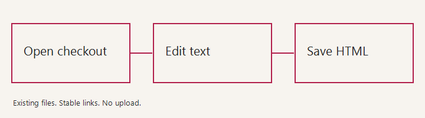

ACCORD FIELD NOTES · WORKING DRAFT
A local-first handbook
A small document for trying visual text editing, linked navigation, and ordinary HTML persistence.
1. Keep the document yours
The file on disk is the document. Accord does not save the sidebar, toolbar, or derived contents list into it.
1.1 Portable by default
Follow the save contract for the companion's persistence boundaries. Relative links stay relative after editing.

2. Try a real edit
Choose Edit text, rename this heading, and change a table cell. The contents list follows the heading while its identifier stays stable.
| Capability | State |
|---|---|
| Text in existing blocks | Available locally |
| Remote review submission | Deferred |
- Preserve inline emphasis, document IDs, and embedded JSON records.
- Paste plain text without introducing foreign markup.
- If another editor changes the file, Save refuses the stale version.
A successful local save is not review submission or publication.